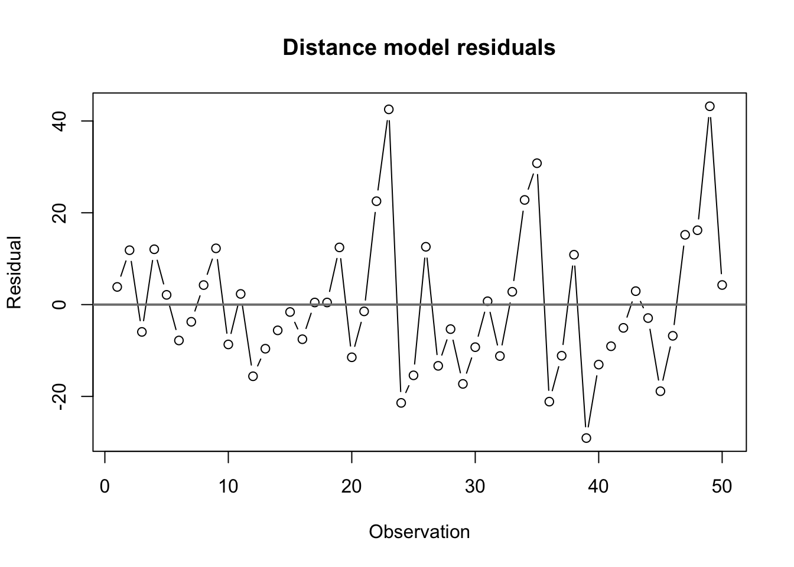
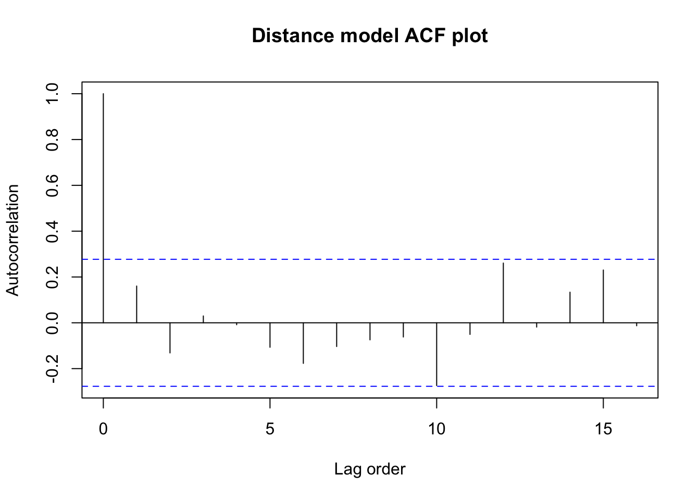
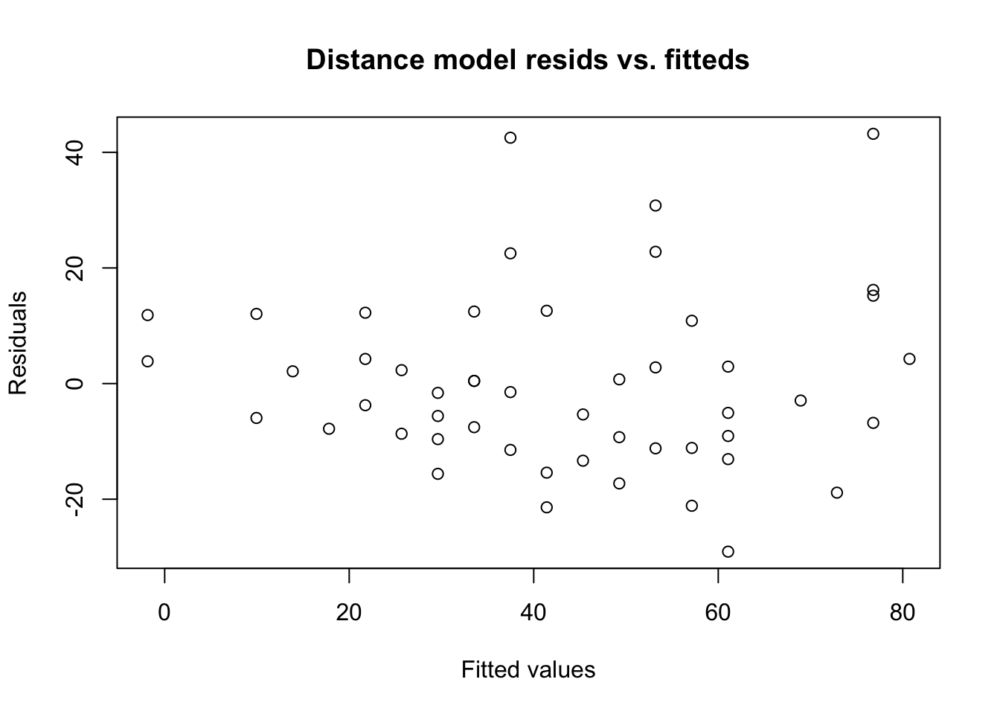
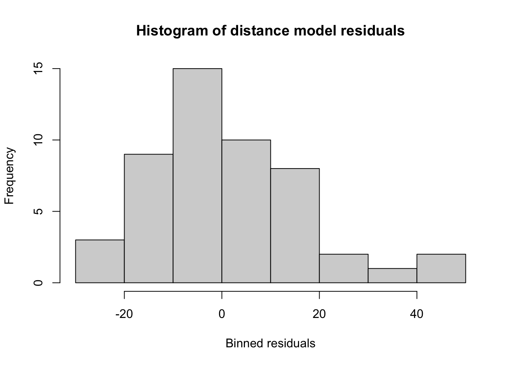
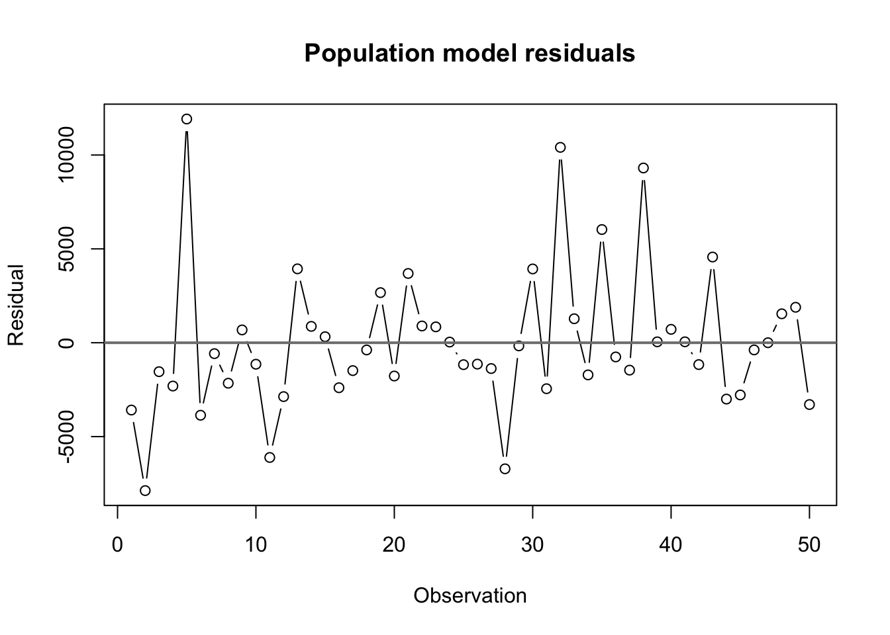
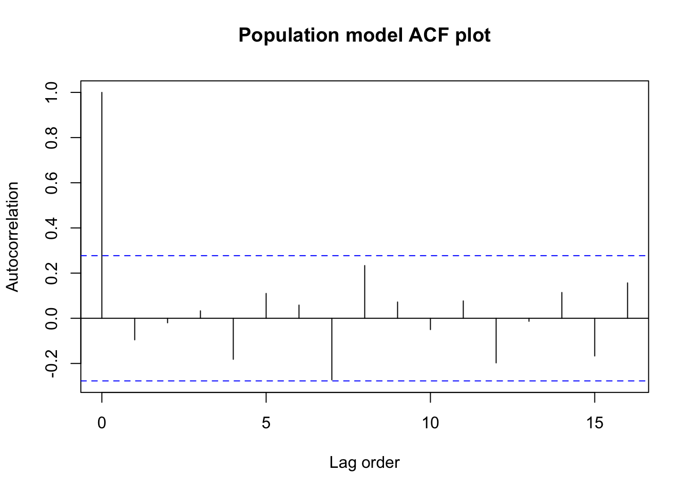
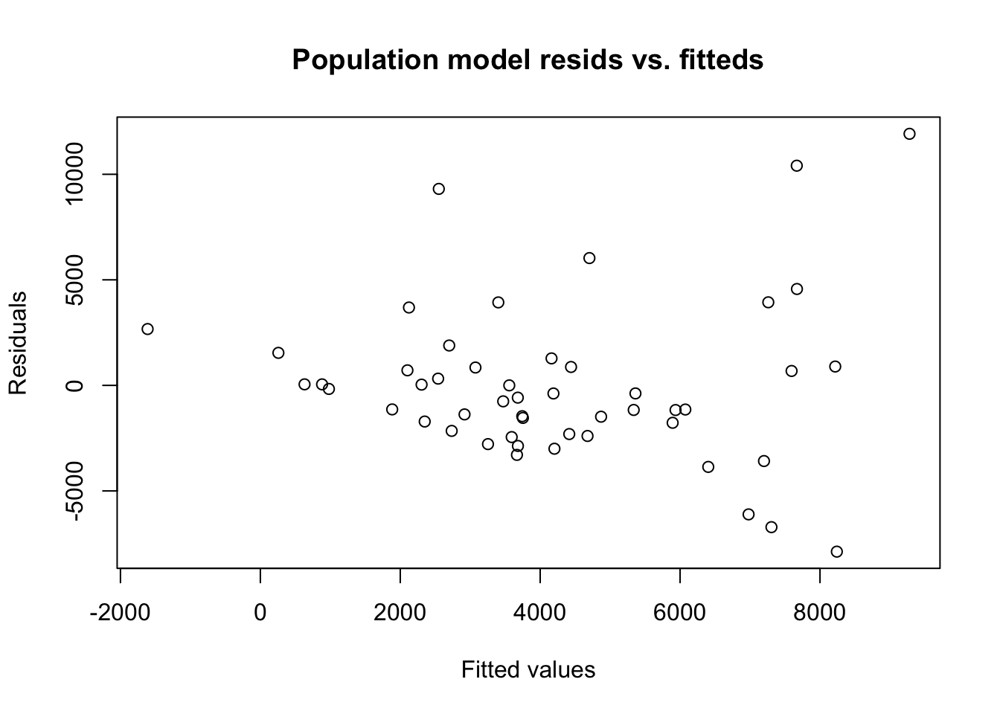
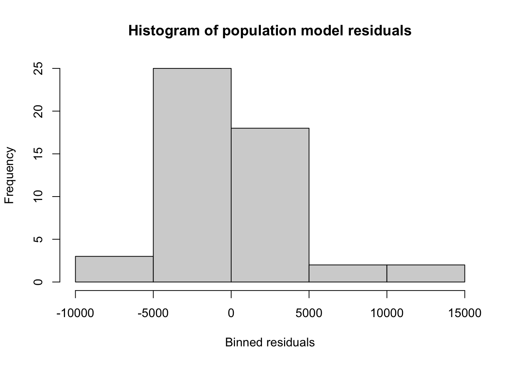

car.lm <- lm(dist~speed,cars)
head(cars) speed dist
1 4 2
2 4 10
3 7 4
4 7 22
5 8 16
6 9 10In this section we learn to examine several regression assumptions using both diagnostic plots as well as statistical hypothesis tests.
We’re going to use two simple datasets as examples: in both cases, we will have difficulty determining conclusively whether all of the IID assumptions have been met, and may need to make some judgment calls.
datasets::cars measures the stopping distances of 50 cars traveling at different speeds (these measurements are all from the 1920s, so the speeds are low and the stopping distances are high). We will model dist as a function of speed.
car.lm <- lm(dist~speed,cars)
head(cars) speed dist
1 4 2
2 4 10
3 7 4
4 7 22
5 8 16
6 9 10Do the regression residuals suggest that the underlying errors are correlated with each other? First, let’s look at a simple index plot of the residuals. We can look for unusual patterns, such as residuals which are grouped together, an alternating sequence of positive-negative-positive-negative, or seasonality such as every “weekend” observation of daily data being different than the “weekday” observations:
plot(car.lm$residuals,type='b',main='Distance model residuals',
xlab='Observation',ylab='Residual')
abline(h=0,lwd=2,col='grey50')
At first glance, there are no obvious signs for concern, no striking patterns. However, notice that a faint pattern emerges, where residuals grow unevenly and then show a large decrease (say, at n=24 or n=36). To a trained eye, this is somewhat less than random behavior. Can you figure out for yourself what is happening here?
The data come to us sorted both by speed and by stopping distance. Within a block of cars which share the same speed, the observations are always arranged from shortest stopping distance (which will usually have a negative residual) to longest stopping distance (which will usually have a positive residual). Then we move on to a new set of car speeds and the pattern repeats.
Next we might look at the autocorrelation function, to see whether there are any sneaky dependencies between e.g. every third or fourth observation.
acf(car.lm$residuals,main='Distance model ACF plot',
xlab='Lag order',ylab='Autocorrelation')
Nothing seems too suspicious here. There are small amounts of positive and negative correlation at Lag 1 and at all higher-order lags, but none of it seems greater than what we might expect from chance alone (the blue dashed bars).
Let’s confirm these visual impressions with a Durbin-Watson test, which examines just the Lag 1 autocorrelation:
#install.packages('lmtest') #-- run as needed
library(zoo,quietly=TRUE,warn.conflicts=FALSE)
library(lmtest)
dwtest(car.lm)
Durbin-Watson test
data: car.lm
DW = 1.6762, p-value = 0.09522
alternative hypothesis: true autocorrelation is greater than 0With so few observations, it’s difficult to build the resolution necessary to reject the null hypothesis of independence. Even though we know these data were collected in a way which would produce serial correlation, we don’t have strong enough evidence (when using a 5% significance threshold) to confirm our suspicion.
Do the regression residuals suggest that some of the underlying errors came from distributions with different means or variances than others?
In the residual index plot above, we would have noticed volatility or regime changes, but we didn’t. The next plot to check is the residuals vs. the fitted values, which can reveal conditional heteroskedasticity:
plot(y=car.lm$residuals,x=car.lm$fitted.values,
main='Distance model resids vs. fitteds',
xlab='Fitted values',ylab='Residuals')
We do seem to see that the smallest fitted values (the left hand side of the graph) have the smallest error variances. If true, this would be a classic case of heteroskedasticity: the variation in stopping distances at fast speeds is greater than the variation in stopping distances at slow speeds.
We will try to confirm this finding with a Breusch-Pagan test:
bptest(car.lm)
studentized Breusch-Pagan test
data: car.lm
BP = 3.2149, df = 1, p-value = 0.07297Although our graph gave some visual indication of heteroskedasticity, the test result is marginal: we simply lack enough data to be sure. In this case, the laws of physics would suggest that heteroskedasticity really is present (several sources of error might be multiplicative and not additive), but for interpolation within this small sample, we may choose to keep our homoskedastic model assumption.
Fifty observations have to be quite extreme to rule out normality; we have already spent enough time with this data to know that the residuals aren’t terribly asymmetric or extreme. We might confirm our impressions with a simple histogram:
hist(car.lm$residuals,main='Histogram of distance model residuals',
xlab='Binned residuals',ylab='Frequency')
Between our small sample size and the bin sizes, it’s hard to see much evidence for or against normality.
We could use a Kolmogorov-Smirnov test or the somewhat more powerful Shapiro-Wilk test. If we use the K-S test we should remember to specifically test our residuals against the normal distribution with a matching error variance, and not the standard normal distribution.
ks.test(car.lm$residuals,pnorm,sd=summary(car.lm)$sigma)Warning in ks.test.default(car.lm$residuals, pnorm, sd =
summary(car.lm)$sigma): ties should not be present for the one-sample
Kolmogorov-Smirnov test
Asymptotic one-sample Kolmogorov-Smirnov test
data: car.lm$residuals
D = 0.13067, p-value = 0.3605
alternative hypothesis: two-sidedshapiro.test(car.lm$residuals)
Shapiro-Wilk normality test
data: car.lm$residuals
W = 0.94509, p-value = 0.02152Here we see that the K-S test, which has somewhat lower power, does not find evidence to conclude that the 50 residuals are non-normal, while the Shapiro-Wilk test does reject the normality hypothesis (at least at \(\alpha=0.05\)). Our residuals have a clear central tendency and are not too unmanageable, but they are probably not strictly normal.
At the end of the day, these residuals seem workable. Depending on the diagnostic plotor test used, they either barely pass or barely fail most of our checks on the IID assumptions. Our background understanding of vehicle physics would suggest that these violations are real, but by reviewing the actual numbers, we do not have reason to believe that the violations will invalidate most top-level regression conclusions. Put another way, the fact that \(n=50\) is probably a bigger limitation for this model than any violations amidst the IID assumptions.
datasets::state.x77 describes basic demographic information on the 50 states of the USA, collected in 1977. We will model Population (measured in 1000s) as a function of Income, Illiteracy, Life Exp, and Murder (murder rate per 100,000).
state.lm <- lm(Population~.,as.data.frame(state.x77[,1:5]))
head(state.x77)[,1:5] Population Income Illiteracy Life Exp Murder
Alabama 3615 3624 2.1 69.05 15.1
Alaska 365 6315 1.5 69.31 11.3
Arizona 2212 4530 1.8 70.55 7.8
Arkansas 2110 3378 1.9 70.66 10.1
California 21198 5114 1.1 71.71 10.3
Colorado 2541 4884 0.7 72.06 6.8I will replicate the same plots and tests we saw in the car stopping distance exercise, but will hold my comments until the end of each section. Readers are encouraged to form their own conclusions and compare them to my thoughts hidden behind each callout box.
plot(state.lm$residuals,type='b',main='Population model residuals',
xlab='Observation',ylab='Residual')
abline(h=0,lwd=2,col='grey50')
acf(state.lm$residuals,main='Population model ACF plot',
xlab='Lag order',ylab='Autocorrelation')
dwtest(state.lm)
Durbin-Watson test
data: state.lm
DW = 2.1573, p-value = 0.7103
alternative hypothesis: true autocorrelation is greater than 0We see no strong evidence of any serial correlation or dependence between the residuals. The data came to us sorted alphabetically by state name,and there are no obvious ways in which the alphabetical order of the states would be linked to their population or demographic relationships, so we have little reason to dig further.
plot(y=state.lm$residuals,x=state.lm$fitted.values,
main='Population model resids vs. fitteds',
xlab='Fitted values',ylab='Residuals')
bptest(state.lm)
studentized Breusch-Pagan test
data: state.lm
BP = 12.698, df = 4, p-value = 0.01285Visual inspection of the resids versus the fitted values suggests a high level of heteroskedasticity, with low residuals (\(\pm 2000\)) for states with low predicted population and high residuals (\(\pm 7000\)) for states with high predicted populations.
The Breusch-Pagan test result confirms this visual impression, at least when using a 5% significance threshold. At this small sample size, significant test results only result from severely heteroskedastic data.
This heteroskedasticity is linked to the fact that since populations are never negative, the amount of possible residuals for a very small state population is tightly bounded. And it makes sense that the demographic factors of Alaska (true population 365K) would always suggest a population of less than 2 million, while the demographic factors of California could support a state with population anywhere from 10 million to 30 million.
hist(state.lm$residuals,main='Histogram of population model residuals',
xlab='Binned residuals',ylab='Frequency')
ks.test(state.lm$residuals,pnorm,sd=summary(state.lm)$sigma)
Exact one-sample Kolmogorov-Smirnov test
data: state.lm$residuals
D = 0.17092, p-value = 0.09544
alternative hypothesis: two-sidedshapiro.test(state.lm$residuals)
Shapiro-Wilk normality test
data: state.lm$residuals
W = 0.90912, p-value = 0.0009749With a small sample size, a visual inspection of the residuals (both from the histogram and the previous scatterplots) does not strongly suggest for nor against normality of the residuals.
However, K-S and Shapiro-Wilk tests offer marginal (\(p \lt 10\%\)) and strong (\(p \lt 0.01\%\)) evidence, respectively, against the normality of the residuals. Although these tests do not closely agree, the weaker power of the K-S tests suggests that its inconclusive result is due primarily to a small sample size, and that the Shapiro-Wilk is identifying non-normality.
We can link this behavior with the heteroskedasticity above: since each state has a hard lower bound to the residuals (for a fitted values of \(\hat{y}\), the residual can never be less than \(-\hat{y}\)), the residuals are asymmetric, with larger positive residuals and smaller negative residuals, which is non-normal behavior.
Here we must leave behind test results and rely on subjective judgment. Because both datasets describe certain physical properties which I believe could not lead to IID normal errors, I would personally prefer to transform the data before using a linear regression model, as we shall examine in the next section.
However, if the models here are simply being used to create ranked lists, or to generate point estimates, or to simply describe whether a bivariate relationship is positive, inverse, or non-existent, I might still move ahead, avoiding making any more detailed or precise claims about the real-world factors which created these datasets.